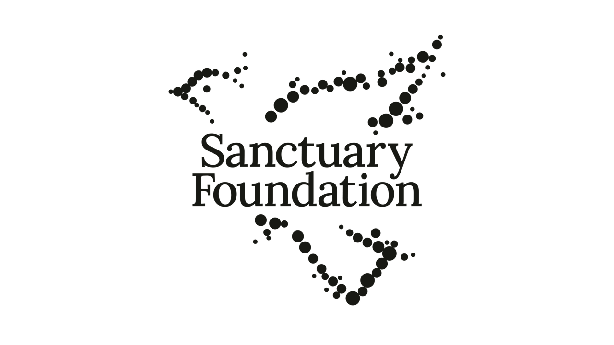
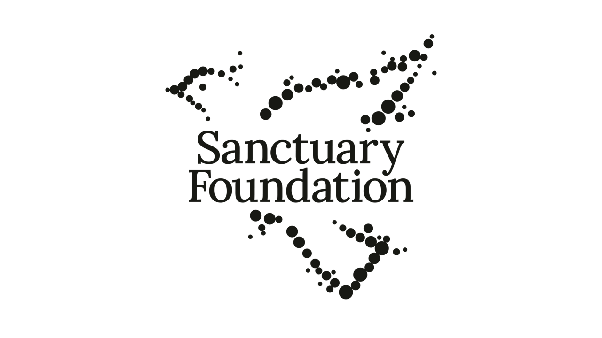

Coping and help-seeking among Ukrainian adolescent girls and young women living in the UK since the onset of the Russia-Ukraine war
Подолання труднощів та пошук допомоги серед українських дівчат-підлітків та молодих жінок, які проживають у Великій Британії з початку російсько-української війни

 
